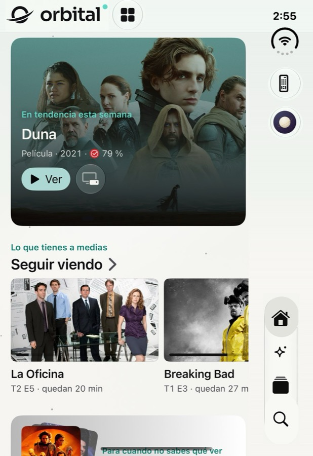
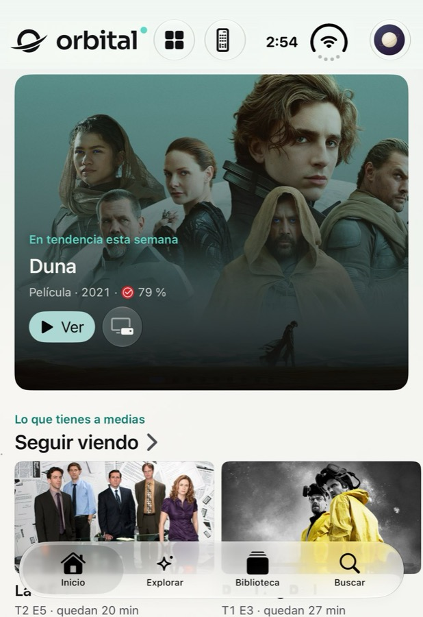
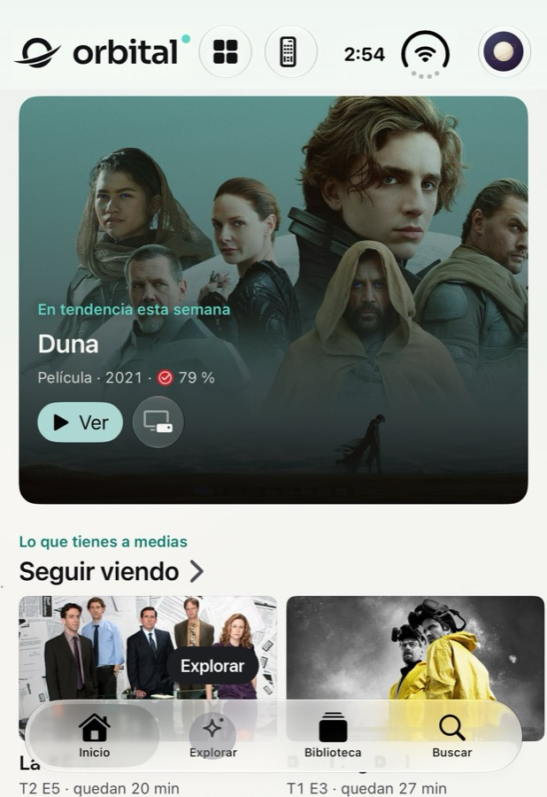
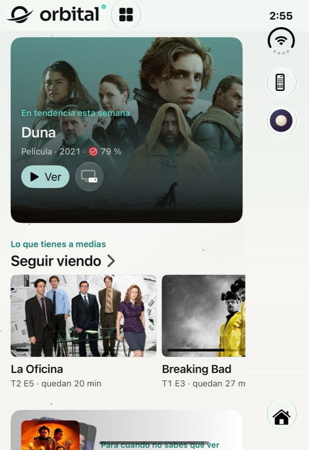
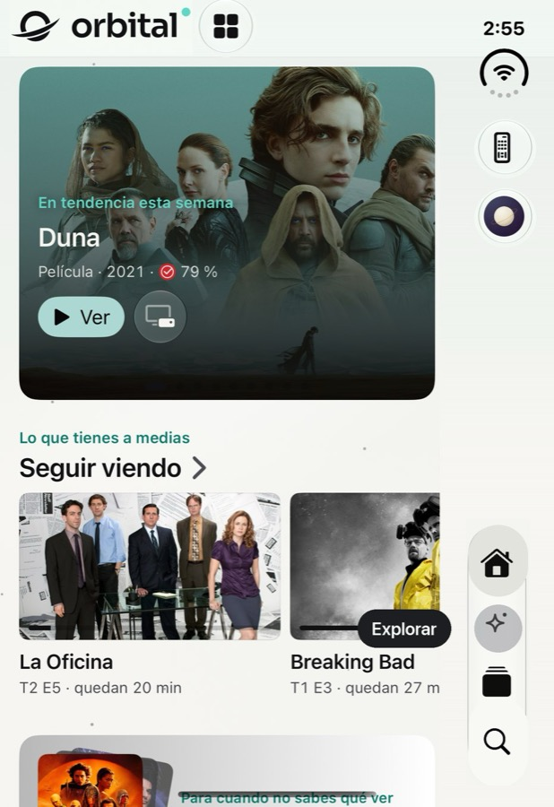

<title>Duo cerrado: A o B</title>
<meta name="claude:viewport-fit-sides" content="cover">
<link rel="stylesheet" href="https://fonts.googleapis.com/css2?family=Inter:wght@400;500;600&family=Space+Grotesk:wght@600;700&display=swap">
<style>
/* Tres decisiones, cada una con «Hoy» y sus opciones lado a lado en el tamaño de la pantalla de afuera del Duo (466 × 678). */
:root {
  --bg: #f2f4f3; --card: #ffffff; --fg: #14181a; --muted: #5a6468; --line: #dde3e2; --accent: #0b8a85; --pick: #0b8a85; --pick-bg: #e3f4f2;
  --display: "Space Grotesk", system-ui, sans-serif; --body: "Inter", system-ui, sans-serif;
}
@media (prefers-color-scheme: dark) { :root:not([data-theme="light"]) {
  --bg: #0e1213; --card: #171c1e; --fg: #e7eced; --muted: #9aa6aa; --line: #283033; --accent: #3cc6bf; --pick: #3cc6bf; --pick-bg: #12302e; color-scheme: dark } }
:root[data-theme="dark"] {
  --bg: #0e1213; --card: #171c1e; --fg: #e7eced; --muted: #9aa6aa; --line: #283033; --accent: #3cc6bf; --pick: #3cc6bf; --pick-bg: #12302e; color-scheme: dark }
body { background: var(--bg); color: var(--fg); font-family: var(--body); line-height: 1.5;
  padding-left: max(16px, env(safe-area-inset-left, 0px)); padding-right: max(16px, env(safe-area-inset-right, 0px)); padding-block: 28px 72px; }
main { max-width: 1120px; margin: 0 auto; display: grid; gap: 40px; }
h1 { font-family: var(--display); font-size: clamp(1.7rem, 4vw, 2.3rem); margin: 0; text-wrap: balance; }
h2 { font-family: var(--display); font-size: 1.35rem; margin: 0; text-wrap: balance; }
.intro { display: grid; gap: 10px; max-width: 66ch; }
.intro p, .lead { margin: 0; color: var(--muted); }
.done { background: var(--card); border: 1px solid var(--line); border-radius: 12px; padding: 14px 16px; max-width: 66ch; display: grid; gap: 4px; }
.done b { font-family: var(--display); color: var(--accent); }
.done p { margin: 0; }
section.decision { display: grid; gap: 14px; }
.dhead { display: flex; gap: 12px; align-items: baseline; flex-wrap: wrap; }
.code { font-family: var(--display); font-weight: 700; color: var(--accent); font-variant-numeric: tabular-nums; }
.options { display: grid; grid-template-columns: repeat(auto-fit, minmax(min(100%, 250px), 1fr)); gap: 16px; }
.opt { background: var(--card); border: 1px solid var(--line); border-radius: 14px; padding: 12px; display: grid; gap: 10px; align-content: start; min-width: 0; }
.opt.pick { border: 2px solid var(--pick); background: linear-gradient(var(--pick-bg), var(--card) 40%); }
.opt.today { opacity: .92; }
.opt header { display: flex; gap: 8px; align-items: baseline; flex-wrap: wrap; }
.opt h3 { margin: 0; font-size: 1rem; font-weight: 600; flex: 1; min-width: 0; }
.tag { font-size: .72rem; font-weight: 600; letter-spacing: .03em; color: var(--pick); border: 1px solid var(--pick); border-radius: 999px; padding: 1px 8px; }
.tag.grey { color: var(--muted); border-color: var(--line); }
.opt img { width: 100%; height: auto; border-radius: 12px; border: 1px solid var(--line); display: block; background: #000; }
.opt ul { margin: 0; padding-left: 18px; font-size: .88rem; display: grid; gap: 3px; }
.opt li::marker { color: var(--muted); }
.plus { color: var(--fg); } .minus { color: var(--muted); }
.why { margin: 0; font-size: .92rem; max-width: 70ch; }
.why b { color: var(--accent); }
.dictate { background: var(--card); border: 1px solid var(--line); border-radius: 12px; padding: 16px; display: grid; gap: 8px; max-width: 70ch; }
.dictate p { margin: 0; }
.dictate .say { font-family: var(--display); font-size: 1.25rem; font-weight: 700; color: var(--accent); }
.evidence { display: grid; grid-template-columns: repeat(auto-fit, minmax(min(100%, 150px), 1fr)); gap: 14px; }
.strip { background: var(--card); border: 1px solid var(--line); border-radius: 14px; padding: 10px; display: grid; gap: 8px; align-content: start; }
.strip img { width: 100%; height: auto; border-radius: 10px; border: 1px solid var(--line); display: block; }
.strip p { margin: 0; font-size: .84rem; }
.strip b { font-weight: 600; }
.map { overflow-x: auto; }
.map table { border-collapse: collapse; width: 100%; min-width: 560px; font-size: .9rem; background: var(--card); border: 1px solid var(--line); border-radius: 12px; overflow: hidden; }
.map th, .map td { text-align: left; padding: 10px 12px; border-bottom: 1px solid var(--line); vertical-align: top; }
.map th { font-family: var(--display); font-weight: 600; font-size: .85rem; color: var(--muted); }
.map tr:last-child td { border-bottom: 0; }
.map td:first-child { font-weight: 600; }
.sources { font-size: .84rem; color: var(--muted); display: flex; flex-wrap: wrap; gap: 4px 14px; }
.sources a { color: var(--accent); }
.moments { display: grid; grid-template-columns: repeat(auto-fit, minmax(min(100%, 230px), 1fr)); gap: 16px; }
.moment { background: var(--card); border: 1px solid var(--line); border-radius: 14px; padding: 12px; display: grid; gap: 8px; align-content: start; min-width: 0; }
.moment img { width: 100%; height: auto; border-radius: 12px; border: 1px solid var(--line); display: block; background: #000; }
.moment h3 { margin: 0; font-size: 1rem; font-weight: 600; }
.moment .rule { margin: 0; font-size: .9rem; }
.moment .state { font-size: .75rem; font-weight: 600; color: var(--muted); }
.moment .state.ok { color: var(--accent); }
.notes { font-size: .88rem; color: var(--muted); max-width: 70ch; display: grid; gap: 6px; }
.notes p { margin: 0; }

.say { font-family: var(--display); font-size: 1.25rem; font-weight: 700; color: var(--accent); margin: 0; }
.note { font-size: .85rem; color: var(--muted); margin: 0; border-left: 3px solid var(--line); padding-left: 10px; }
.pair { display: grid; grid-template-columns: 1fr 1fr; gap: 8px; }
.pair figure { margin: 0; display: grid; gap: 4px; }
.pair figcaption { font-size: .8rem; color: var(--muted); }
</style>
<main>
  <div class="intro">
    <h1>Duo cerrado: A o B</h1>
    <p>Solo esta decisión. Las dos versiones ya van pulidas como pediste, con el ícono de Orbital, sobre Inicio. Son maquetas hechas con pedazos de capturas reales.</p>
  </div>

  <section class="decision">
    <div class="dhead"><span class="code">LD1</span><h2>Dónde van los controles</h2></div>
    <div class="options">
      <article class="opt">
        <header><span class="code">LD1-A</span><h3>Los controles en la columna de la derecha</h3></header>
        
        <ul>
          <li class="plus">Le deja al contenido casi todo el alto, que es lo que más le falta a esta pantalla.</li>
          <li class="plus">Lo que más tocas queda bajo el pulgar.</li>
          <li class="minus">Le quita unos 80 puntos de ancho al contenido: los carruseles se cortan en la columna.</li>
          <li class="minus">En el iPhone normal se ve distinto: las pestañas van abajo, como hoy.</li>
        </ul>
        <p class="note">La hora y la señal las pinta el iPhone. Aquí las subí a la altura del logo, como pediste, pero en Archivos, que es de Apple, salen más abajo. Puede que iOS no deje subirlas. Si no deja, nuestro renglón se queda arriba y la hora queda donde iOS la ponga.</p>
      </article>
      <article class="opt pick">
        <header><span class="code">LD1-B</span><h3>Arriba y abajo, en un solo renglón</h3><span class="tag">recomendada</span></header>
        
        <ul>
          <li class="plus">La hora, la señal y tus botones van en un mismo renglón: arriba ya no hay dos renglones y se ganan unos 60 puntos.</li>
          <li class="plus">«En tendencia» queda centrada y de orilla a orilla, con el mismo aire a los dos lados.</li>
          <li class="plus">Es tu 17 Pro: la misma barra de pestañas abajo, nada nuevo que aprender y un solo diseño que mantener.</li>
          <li class="minus">La barra de abajo ocupa alto, salvo que se encoja a un botón (abajo).</li>
          <li class="minus">En iOS 27.2 la hora vuelve al costado en las hojas a media altura.</li>
        </ul>
        <p class="note">La hora y la señal van donde las pone iOS. Nuestros botones se acomodan alrededor: el logo, el mosaico y el control a la izquierda, tu foto a la derecha. En el 17 Pro ese renglón comparte lugar con la isla, así que ahí sigue como hoy.</p>
      </article>
    </div>
  </section>

  <section class="decision">
    <div class="dhead"><span class="code">DK</span><h2>La barra de pestañas como un solo botón</h2></div>
    <p class="lead">Sí se puede, y el iPhone ya lo trae: al bajar por una pantalla, la barra se encoge a un botón con la sección en la que estás. Al tocarlo se abre con todas, y si arrastras el dedo encima va diciendo dónde estás: Inicio, Explorar, Biblioteca, Buscar. Al ser la del iPhone, es la misma en tu 17 Pro y en el Duo, y no hay que construirla ni mantenerla.</p>
    <div class="options">
      <article class="opt">
        <header><span class="code">DK-A</span><h3>Siempre abierta</h3></header>
        <ul><li class="plus">Las cuatro secciones siempre a la vista.</li><li class="minus">En B ocupa la parte de abajo todo el tiempo.</li></ul>
      </article>
      <article class="opt pick">
        <header><span class="code">DK-B</span><h3>Se encoge a un botón al bajar</h3><span class="tag">recomendada</span></header>
        <div class="pair">
          <figure><figcaption>B, al bajar: un solo botón.</figcaption></figure>
          <figure><figcaption>Lo tocas y arrastras: dice «Explorar».</figcaption></figure>
        </div>
        <ul><li class="plus">Mientras ves contenido, la parte de abajo queda libre.</li><li class="plus">Es del iPhone: sale igual en el 17 Pro y en el Duo.</li><li class="minus">Cambiar de sección cuesta un toque más cuando está encogida.</li></ul>
      </article>
    </div>
    <div class="pair" style="max-width:560px">
      <figure><figcaption>Así se vería en A, encogida al pie de la columna.</figcaption></figure>
      <figure><figcaption>En A, abierta y arrastrando.</figcaption></figure>
    </div>
    <p class="note"><b>Ojo:</b> el 2 nov decidiste lo contrario: «la barra siempre debería estar completa, siempre deberíamos poder ver todo». Por eso hoy está apagado. DK-B cambiaría esa decisión. Si prefieres conservarla, DK-A y LD1-B siguen funcionando, aunque la barra ocupe la parte de abajo.</p>
    <p class="note">Todavía no lo he visto encogerse en el Duo: solo se encoge cuando una persona desliza con el dedo, y para eso necesito el permiso del simulador.</p>
    <p class="note">En A la columna está ahí de todas formas: encoger la barra no libera nada para el contenido. Además, no sé si el iPhone la encoge dentro de la columna; tendría que probarlo.</p>
  </section>

  <section class="decision">
    <div class="dhead"><h2>Mi recomendación</h2></div>
    <p class="say">LD1-B · DK-B</p>
    <p class="why"><b>Por qué cambié de A a B:</b> lo que más le costaba a B era la barra de abajo. Si se encoge a un botón mientras ves contenido, ese costo casi desaparece. Con el renglón de arriba unido, B pierde poco alto y queda igual que tu 17 Pro: lo conoces de memoria y se construye una sola vez para los dos iPhone. A gana alto, pero cuesta ancho y es un diseño aparte que mantener solo para el Duo.</p>
  </section>
</main>
